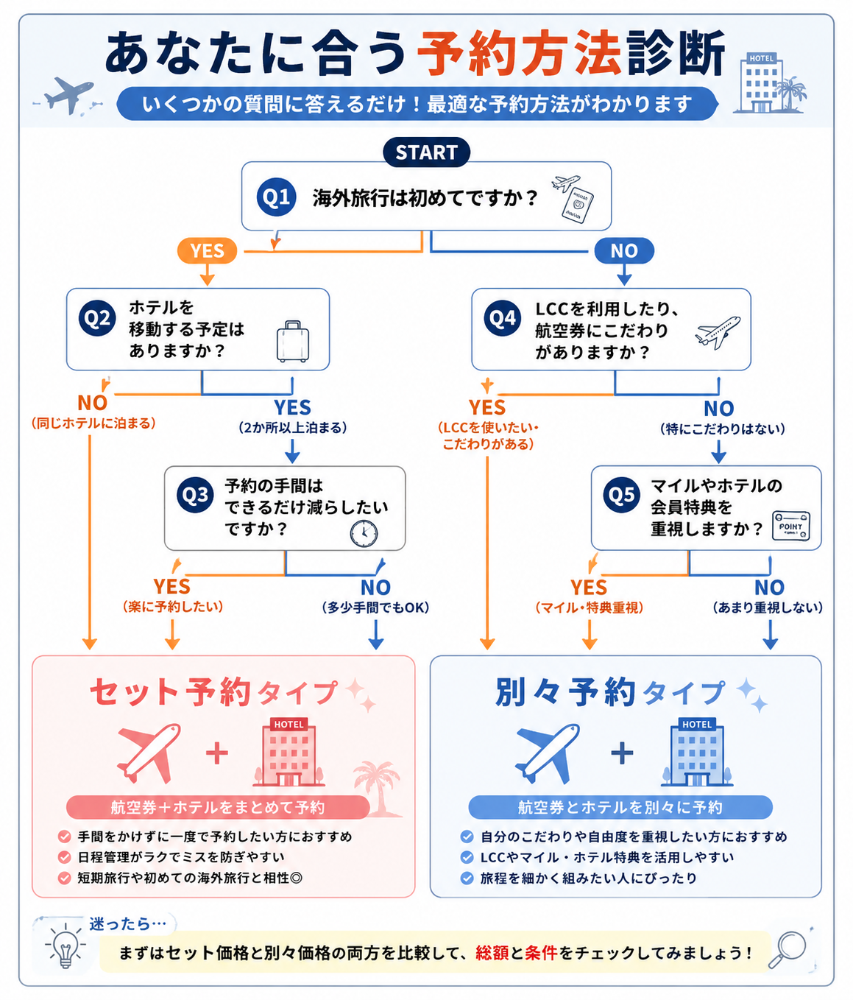
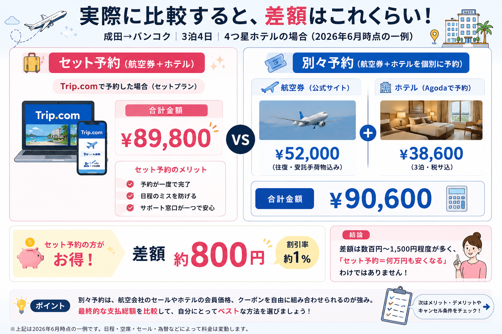
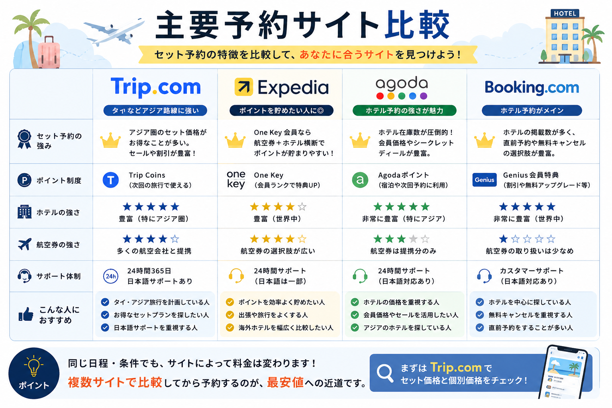
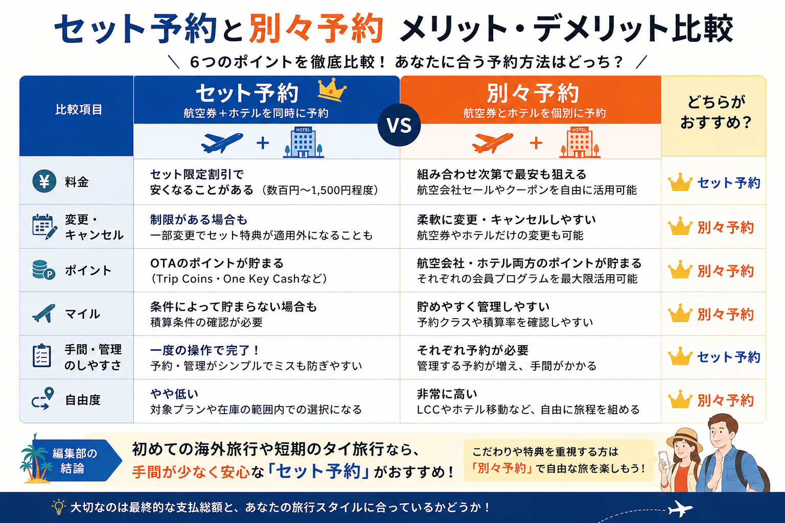

「セット予約」と「別々予約」、編集部が一番悩んだ選択
編集部では9月に予定しているタイ旅行をきっかけに、「航空券とホテルは本当にセット予約がお得なのか？」という疑問を持ちました。周りに聞いても「セットの方が安い気がする」「いや、別々の方が得だった」と意見が分かれ、はっきりした答えが見つかりません。
結局、セットと別々、どちらが得なのか。
この疑問に決着をつけるため、Trip.com・Expedia・Agoda・Booking.comの公式情報を横並びで検証してみることにしました。
この記事では、セット予約は本当にお得なのか、別々予約との違い、あなたにはどちらが向いているのかを、実際の比較データとともにお伝えします。
結論｜「セット予約＝最安」ではない。でも、短期旅行では選ぶ理由がある
先に結論からお伝えします。セット予約は「常に最安」ではありません。
今回、2026年6月時点・成田〜バンコク便・3泊4日・4つ星クラスのホテルという条件を揃えて公式サイトを比較したところ、セット予約の方が安いケースは複数確認できましたが、その差額は約380円〜1,500円程度、平均約850円、割引率にして約1％前後にとどまりました。
つまり、「セットにすれば数万円浮く」というイメージを持っている方には、少し肩透かしかもしれません。
それでも編集部が今回のタイ旅行でセット予約を選ぶのは、金額差以上に、予約が一度で完結する、日程のミスが起きにくい、トラブル時の連絡先が一本化されるというメリットが、3〜5日程度の短期旅行では効いてくると考えているからです。
一方で、LCCを使いたい方や、ホテル・航空会社の会員特典を最大限に活用したい方には、別々予約の方が満足度が高くなる可能性があります。
ひと目でわかる早見表
本文を読む時間がない方向けに、結論だけ先にまとめました。
| こんな人には | おすすめ |
|---|---|
| 初めての海外旅行／3〜5日程度の短期旅行／手軽さ重視 | セット予約 |
| LCC利用／ホテルを途中で変えたい／マイルやホテル会員特典を重視 | 別々予約 |
| とにかく1円でも安く／組み合わせを比較する時間がある | 別々予約（ただしセールのタイミング次第） |
価格を確認するときのポイント
セット価格と個別価格は、同じ日程でもサイトや会員状態によって変わります。表示価格だけでなく、税金・サービス料・手荷物・キャンセル条件まで含めた総額で比べましょう。
あなたはどっち？30秒診断チャート
文章より先に、まずは診断で自分のタイプを確認してみましょう。

- 海外旅行が初めて、ホテル移動なし、予約の手間を減らしたい方はセット予約タイプ。
- LCC・ホテルのこだわり・マイルや会員特典を重視する方は別々予約タイプ。
こんな人は「セット予約」で後悔しない
初めて海外旅行へ行く方
航空券とホテルを一度に予約できるため、「ホテルの日付を間違えた」「飛行機の到着日にホテルを取っていなかった」という初歩的なミスを防ぎやすくなります。
旅行準備の負担をできるだけ減らしたい方
旅行前は、航空券・ホテル・eSIM・空港送迎・海外旅行保険など、準備することが山ほどあります。せめて航空券とホテルだけでも一度に確保できれば、残りのタスクに集中できます。通信準備はeSIMガイドもあわせて確認しておくと安心です。
タイ旅行が3〜5日程度の方
短期旅行ではホテルを何度も移動するケースが少なく、旅程もシンプルになりがちです。だからこそセット予約との相性が良いと言えます。
「数百円の差」より「手間をかけない」方を取りたい方
今回の比較では、セット予約の方が安いケースはあったものの、差額は数百円〜1,500円程度でした。この金額差を「安い」と見るか「誤差」と見るかは人それぞれですが、後者に近い感覚の方にはセット予約が向いています。
「安さ」より「こだわり」を取るなら、別々予約がおすすめ
LCCを利用したい方
格安航空会社は、OTAのセット予約より航空会社公式サイトの方が安くなる場合があります。受託手荷物や座席指定を自分で細かく選びたい方にも、別々予約の方が向いています。
ホテル選びに妥協したくない方
「2泊はスクンビット、最終日は空港近くのホテル」というように、旅の途中でホテルを変えたい場合は、別々予約の方が自由度が高くなります。
ホテル会員特典を活かしたい方
マリオット・ヒルトン・IHGなどのホテルチェーンでは、公式サイト予約限定で会員ポイントや宿泊実績、無料アップグレードなどの特典が付く場合があります。OTA経由では対象外になるケースもあるため、ホテル会員の方は事前に比較しておきましょう。
マイルを効率よく貯めたい方
航空会社公式サイトの方が、積算率や予約クラスを確認しやすいケースが多くあります。旅行費用だけでなく、将来の特典航空券まで見据える方は、別々予約のメリットが大きくなります。
結局、何円違うのか。編集部が実際に計算してみた
「差額は数百円〜1,500円程度」と聞いても、実感が湧きにくいと思います。そこで、今回の検証条件（2026年6月時点・成田〜バンコク・3泊4日・4つ星クラス）で確認できた実際の価格差の内訳を公開します。
| 検証パターン | セット予約との差額 |
|---|---|
| Trip.com（航空券＋ホテル） | 約380円安い |
| Expedia（One Key対象プラン） | 約700円安い |
| Agoda（パッケージ限定価格） | 約1,500円安い |
平均すると約850円、割引率にして約1％前後という結果でした。つまり、「セット予約＝何万円も安くなる」わけではありません。

※掲載料金は検索時点の一例です。実際の料金は日程、空席、ホテル、会員状態、通貨、為替などにより変動します。
逆に別々予約が安くなるケースもある
別々予約には、航空会社公式セール・ホテル会員価格・OTA限定クーポンを自由に組み合わせられる強みがあります。航空券だけ航空会社のセールを狙い、ホテルだけAgodaの会員価格を使う、という組み合わせなら、セット予約より安くなることも十分あります。
大切なのは「セットか別々か」ではなく、最終的な支払総額をきちんと比較することです。
そもそも、どのサイトで比較すればいいのか
「セット予約」と一口に言っても、比較するサイトによって強みが異なります。今回の検証を通じて感じた、それぞれの特徴をまとめました。
| サイト | セット予約 | 特徴 |
|---|---|---|
| Trip.com | ◎ | タイなどアジア路線のセット価格に強い。Trip Coinsも貯まる |
| Expedia | ◎ | One Key会員なら航空券・ホテル横断でポイントが貯まりやすい |
| Agoda | ○ | ホテル在庫と会員価格が強み。セットは対象プランがやや限定的 |
| Booking.com | △ | ホテル主体のサイトで、セット予約自体の対象が少なめ |

キャンセル・ポイント・自由度はどちらが有利？
予定が変わったときの安心感
旅行では、直前になって予定が変わることも珍しくありません。この点では別々予約の方が有利です。航空券だけ変更したい場合でも、ホテルには影響しません。一方、セット予約では予約内容によって問い合わせが必要になったり、一部変更でセット特典が適用外になったりする場合があります。
ポイントはどちらがお得？
セット予約でも、Trip.comの「Trip Coins」やExpediaの「One Key Cash」の対象になる商品があります。ただし、対象外の商品や利用条件もあるため、「ポイントが付く＝自由に使える」とは限りません。Trip.comの使い勝手はTrip.comの評判・口コミ記事でも整理しています。
ホテル会員の方は要注意
マリオット・ヒルトン・IHGなどでは、OTA経由の予約が宿泊実績や会員ポイントの対象外になる場合があります。普段からホテルチェーンを利用している方は、公式サイト予約との違いも比較してみましょう。
マイルを重視するなら？
マイルを効率よく貯めたい方は、別々予約の方が管理しやすいケースが多いです。航空会社公式サイトでは予約クラス・積算率・上級会員特典を確認しやすく、将来の特典航空券にもつながります。
トラブル時のサポート体制
セット予約では旅行予約サイトが窓口になるため、相談先が一つにまとまりやすいのがメリットです。ただし、実際の変更や返金は航空会社やホテルの規約に従うため、必ずしもその場で解決できるとは限りません。
自由に旅程を組みたいなら
自由度では、別々予約が優れています。「行きはLCC、帰りはJAL」「2泊はスクンビット、最終日は空港ホテル」といった旅程も自由に組めます。一方、セット予約は対象プランや在庫の範囲内で選ぶことになるため、細かくこだわりたい旅行には向かない場合があります。
セット予約と別々予約の比較まとめ
ひと目でわかる勝敗表
| 比較項目 | 勝者 |
|---|---|
| 安さ | セット予約 |
| キャンセル・変更のしやすさ | 別々予約 |
| マイルの貯めやすさ | 別々予約 |
| 初心者へのおすすめ度 | セット予約 |
| 予約・管理のしやすさ | セット予約 |
| 自由度 | 別々予約 |
| サポート窓口の一本化 | セット予約 |
6項目まとめ比較表（詳細版）
| 比較項目 | セット予約 | 別々予約 |
|---|---|---|
| 料金 | 安くなることがある（数百円〜1,500円程度） | 組み合わせ次第で最安も狙える |
| 変更・キャンセル | 制限がある場合も | 柔軟に変更しやすい |
| ポイント | OTAポイント対象 | 航空会社・ホテル両方を活用しやすい |
| マイル | 条件確認が必要 | 管理しやすい |
| 手間 | 一度で予約完了 | それぞれ予約が必要 |
| 自由度 | やや低い | 非常に高い |

こんな旅行ならセット予約がおすすめ
- 初めての海外旅行
- タイ旅行が3〜5日程度
- ホテル移動をしない
- 手軽さを重視したい
- 多少の価格差なら気にしない
逆に、LCCを利用したい／マイルを重視したい／ホテル会員特典を使いたい／旅程を自由に組みたい、という方は、別々予約の方が満足度は高いでしょう。
よくある質問（FAQ）
Q. セット予約なら必ず安くなりますか？
いいえ。セット予約専用価格が適用されることはありますが、必ず最安とは限りません。航空会社公式セールやホテル公式サイトの会員価格、OTA限定クーポンを組み合わせた方が安くなるケースもあります。大切なのは最終的な支払総額で比較することです。
Q. セット予約はキャンセルできますか？
できます。ただし、ホテルと航空券で条件が異なる場合があります。「ホテルは無料キャンセルできるが航空券は返金不可」というケースもあるため、予約前にそれぞれの条件を確認しましょう。
Q. マイルは貯まりますか？
航空会社や運賃クラスによって異なります。OTA経由でも積算対象となるケースはありますが、対象外の運賃もあるため、マイルを重視する方は予約前に航空会社の条件を確認することをおすすめします。
Q. ホテルの会員特典は利用できますか？
ホテルチェーンによって異なります。Marriott BonvoyやHilton Honorsなどでは、OTA経由の予約が宿泊実績やポイント付与の対象外となる場合があります。ホテル会員の方は、公式サイトとの価格差も比較してから予約すると安心です。
Q. セット予約とパッケージツアーは何が違いますか？
パッケージツアーは旅行会社が現地観光や食事なども含めて組み立てる商品であるのに対し、セット予約（ダイナミックパッケージ）は航空券とホテルを組み合わせて予約できる仕組みで、現地の過ごし方は自分で自由に決められます。旅程を自分で組みたい方は、セット予約の方が向いています。
Q. クレジットカードのポイントはセット予約でも貯まりますか？
多くの場合、決済額に応じてクレジットカード側のポイントは通常どおり貯まります。ただし、OTA側の独自ポイント（Trip CoinsやOne Key Cashなど）は対象外の商品もあるため、両方を貯めたい方は予約前に条件を確認しておくと安心です。
Q. 家族旅行や一人旅でもセット予約はお得ですか？
人数や旅程が変わっても、価格差の傾向は大きくは変わりません。ただし、家族旅行で部屋タイプの変更が発生しやすい場合や、一人旅で急な予定変更が起きやすい場合は、変更のしやすさを重視して別々予約を検討する価値があります。
予約前に確認したい5つのポイント
料金だけで予約を決めると、あとから「思っていた内容と違った」と後悔することがあります。予約前に、次の5項目をチェックしておきましょう。
- 航空券とホテルの最終支払総額
- 受託手荷物・座席指定の料金
- キャンセル・変更条件
- 獲得できるポイント・マイル
- ホテルの朝食や無料キャンセルの有無
出発前の準備全体は、海外旅行準備チェックリストもあわせて確認しておくと抜け漏れを防ぎやすくなります。
編集部がTrip.comのセット予約を選んだ理由
ここまで料金・変更・ポイント・自由度などを比較してきました。そのうえで、今回のタイ旅行では、編集部はTrip.comのセット予約を選ぶ予定です。
最安値だけを見るなら別々予約の方が魅力的な瞬間もありました。航空会社のセールとAgodaの会員価格を組み合わせれば、もう少し安くなる可能性もあったからです。
それでもセットを選ぶ理由は、旅行中にホテルや航空券のトラブルが起きたとき、一つの窓口に相談できる安心感を重視したいからです。今回は初めて訪れるエリアに宿泊する予定で、土地勘もありません。何かあったときに連絡先が2つも3つもある状態は不安が残ります。
「数百円の差額」よりも、「何かあったときにすぐ相談できる」という安心感。今回はそちらを優先しました。
この記事はここで終わりません
DIVERRAでは、実際に9月のタイ旅行でセット予約を利用し、予約の流れ、チェックイン時のスムーズさ、サポート対応の実際、最終的に支払った総額、良かった点・気になった点を追記していく予定です。
まとめ
航空券とホテルの予約方法に、絶対の正解はありません。今回の比較から分かったポイントを整理すると、セット予約は数百円〜1,500円程度安くなるケースがある一方で、常に最安とは限りません。
変更や自由度では別々予約が有利です。初めての海外旅行や短期旅行ならセット予約と相性が良く、ホテル会員特典やマイルを重視するなら別々予約も検討する価値があります。
旅行は、料金だけで満足度が決まるものではありません。「少しでも安く予約すること」だけでなく、自分が旅先で何を重視したいかに合わせて、予約方法を選んでみてください。
編集部おすすめ｜迷ったらこの順番で比較する
- Trip.comでセット料金を確認する
- Agoda・Booking.comでホテル単体の価格をチェック
- 航空会社の公式サイトでセール・マイル条件を確認
- 差額と手間を天秤にかけ、納得できる方で予約